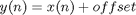

Contents
AttributeClass
Parent classes: BaseClass.
A template class for RF/analog block attributes. The common methods of BaseClass are inherited. The AttributeClass encapsulates the effect method, that must be overwritten by the individual attribute implementation.
Properties
Inherited Properties
- Name - Name of the object.
Methods
Examples
SeqLen
The sequence length used by the run method. DEfault value is 500000.
AggObj
Handle to the aggregate object. The AggObj field is set when the add method includes the attribute.
AttributeClass
OBJ=AttributeClass(NAME)
Object constructor that returns OBJ with it's Name property set to NAME.
effect@AttributeClass
OUTP=effect(OBJECT,INP)
This method is intended to be a templete for the functional implementation of any attribute. OBJECT effectes the INP signal (that is supposed to be an object of SignalClass) and return the value in OUTP.
run@AttributeClass
OUTP=run(OBJECT, INP)
Breaks the INP signal the SeqSize length chunks and invites the effect method of OBJECT on each chunk. After processing the return values is assambled in OUTP. This feature may be used when a long length signal is processed.
Creating a user defined class for DC offset
Step 1. The abstraction of DC offset
The property of DC offset is a constant voltage that is added to the received baseband signal. Thus the class will encapsulate a property called offset and the functionality that should be implemented is:

where x(n) is the received baseband, and y(n) is the signal with DC offset.
Step 2. Define DCOffsetClass
classdef DCOffsetClass < AttributeClass
properties
offset
end
methods
function DCOffsetClass(obj,value)
obj.offset=value;
end
function outp=effect(obj,inp)
outp=inp+obj.offset;
end
end
endDCOffsetClass is fully compatible with the amoRF toolbox.